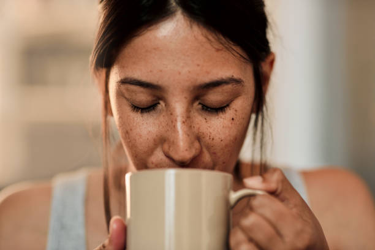

|  | ||
MairOverall both the 0.5 lb and 1.0 lb bags are great craftsmanship and I really like them. But, I am very disappointed that the 1.0 lb bag is not paper. It has a plastic coating over it. This is an issue for me as I use a stamp and the ink smears. There is no indication that they are plastic-coated bags. But, the 0.5 lb bags are paper and they work great! |
JakeThese bags are excellent for storing fresh roasted coffee. I have a Weston vacuum sealer, so the heat sealer on it is more than enough to seal these bags. As others have noted, these bags need to be heat sealed. There is plenty of room above the ziplock to seal them. They are easy to open up and store 8 ounces or bit more of coffee. |
SinnlerI bought these sealable coffee bags with valve for giving coffee away to friends and family. I only roast small batches so the 8 oz (250g) bags work very nicely. You could likely squeeze up to 300g if you tried. I am overall very happy with this product. It does not look cheap, is easy to use, and keeps the coffee fresh. As some reviews have pointed out. You need to heat press the bags closed. |